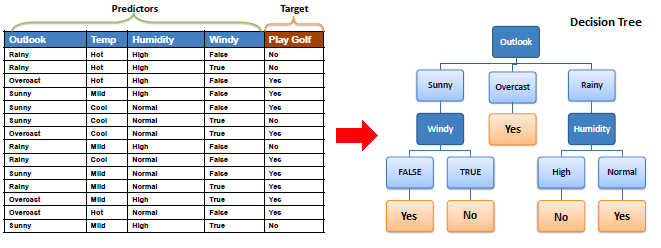
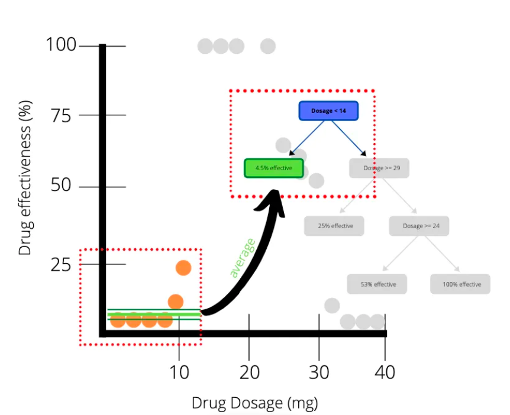
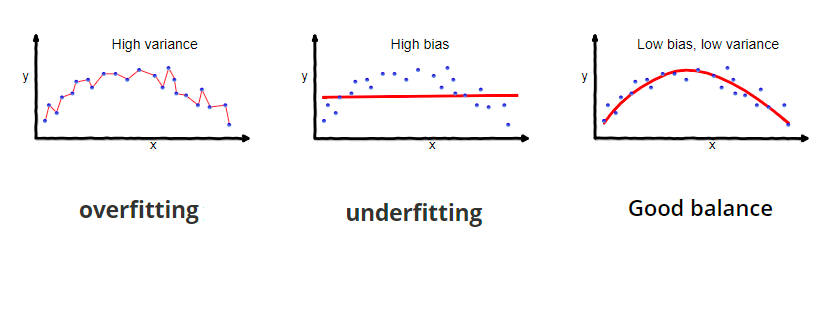
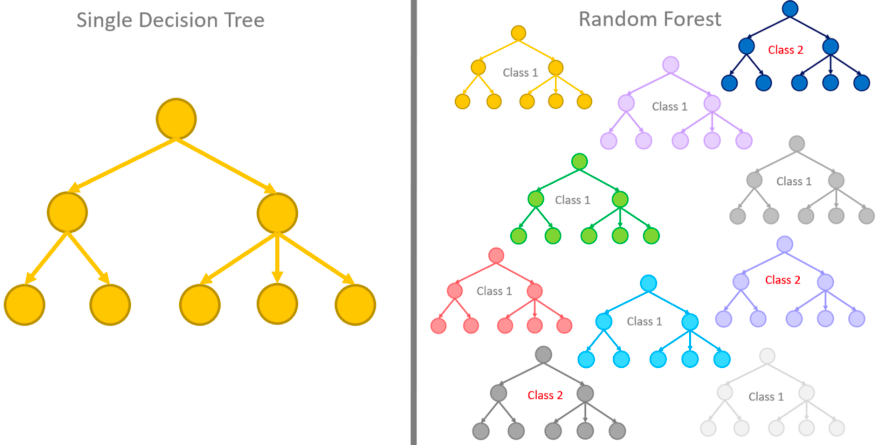
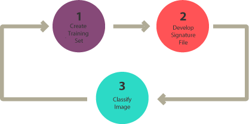

6 Classification1
6.1 Summary
6.1.1 How to classify remotely sensed data
6.1.1.1 Classification trees
Classify data into two or more discrete categories
Output variable is categoriesed such as religion, sex, nationality
Top-down approach
The final leaves can be a mixture of the categories(impure), so we quantify this with the Gini Impurity

6.1.1.2 Regression trees
Regression trees is decision tree model with regression
Output variable is continuous values such as height, weight or temperature
Bottom-up approach
Subset the data into smaller chunks

Source:Luka Beverin
6.1.1.3 Overfitting
What if we have a leaf with just one person or one pixel value? = overfitting
Bias means difference between predicted value and true value(oversimplifies model)
Variance is variability of model for a given point

Source:Seema Singh
6.1.1.4 Prevent overfitting
We can fix it by limiting how trees grow, for example we can set a minimum number of pixels in a leaf(20 is often used)
 Source:ML Wiki
Source:ML WikiAlso we can fix it by weakest link pruning (with tree score)
use one less leaf, remove a leaf = sub-tree, SSR will get larger = termed PRUNING or cost complexity pruning
Sum for the tree
Tree score = SSR + tree penalty (alpha) * T (number of leaves) Lower means better
There is another method… Random Forest
Ensemble machine learning model
All decision trees are grown by randomly extracting sub-datasets
A single data may be selected multiple times as it allows redundancy
Find the overall value which got more values based on all the trees

Source:Rosaria Silipo
6.1.2 Image classification
There are three types of image classification.
| Supervised Classification | Unsupervised Classification |
|---|---|
| Pattern recognition or machine learning | clustering |
| Parametric (normal distribution) : Maximum likelihood | k-means |
| non parametric (not normal) : Support Vector Machine, Neural Networks | ISODATA |

Source:GIS Geography
6.2 Applications
6.3 Personal Reflection
As a surveying engineer, I have always been obsessed with accurate figures. This background is why it is important to choose the model with the highest accuracy. And even in the real world, it’s common to prioritize accuracy because most of us aim for profit. In this week’s lesson, I learned that classification methods fundamentally analyze data differently, which affects the ability to build accurate models. Although I did not fully understand the mathematical principles of each classification method, my goal is to build a model that is close to perfection by understanding it more clearly. However, in the field of social science research, since there is a possibility of understanding a phenomenon and inducing certain results rather than simply accurately predicting a phenomenon, interpretability should also be considered.